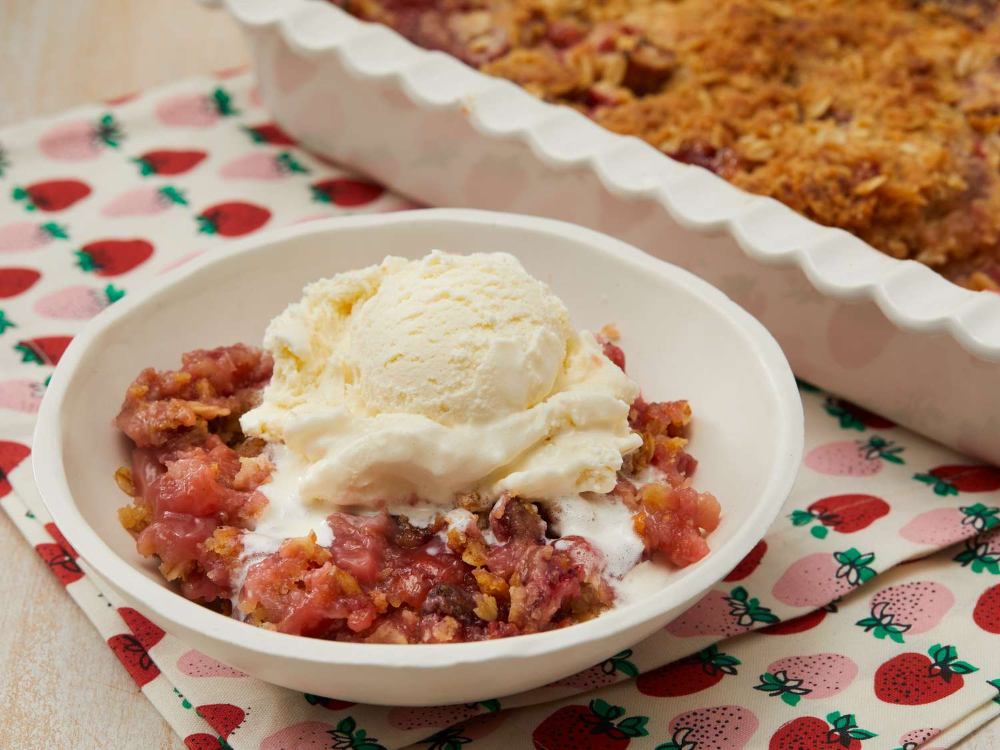

Strawberry Rhubarb Crisp Recipe

Description
Strawberry rhubarb crisp is a delicious dessert that combines the tart flavor of rhubarb with sweet strawberries, topped with a buttery, crunchy oat crumble. This classic spring and summer dessert is perfect served warm with a scoop of vanilla ice cream.
Ingredients
- 4 cups chopped rhubarb
- 2 cups sliced fresh strawberries
- 1 cup granulated sugar
- 1 cup all-purpose flour
- 1 cup rolled oats
- 1 cup packed brown sugar
- ½ cup butter, melted
- 1 teaspoon ground cinnamon
- ¼ teaspoon salt
Steps
- Preheat oven to 375°F (190°C).
- In a large bowl, mix rhubarb, strawberries, and granulated sugar. Transfer to a greased 9x13 inch baking dish.
- In a separate bowl, combine flour, oats, brown sugar, cinnamon, and salt.
- Add melted butter to the dry mixture and stir until crumbly.
- Sprinkle the crumb topping evenly over the fruit mixture.
- Bake in preheated oven for 35-40 minutes, until topping is golden brown and fruit is bubbling.
- Cool for at least 15 minutes before serving. Delicious with vanilla ice cream on top!